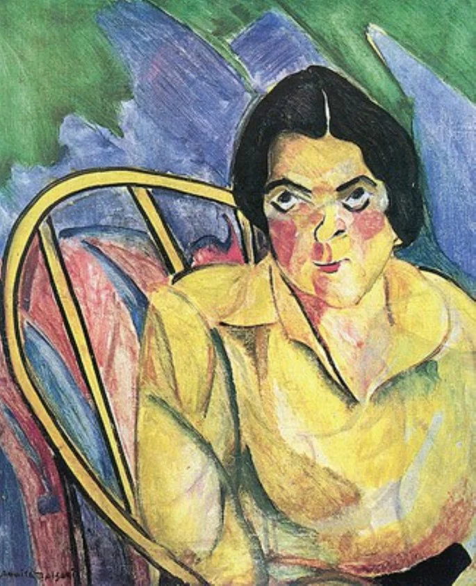

Pintada entre 1915 e 1916, A Boba é uma das obras mais conhecidas de Anita Malfatti. O quadro retrata uma figura feminina sentada em uma cadeira, com expressão marcante e olhar intenso. A pintura chama a atenção pelas cores fortes, pelas formas simplificadas e pela maneira expressiva como a personagem é representada. Em vez de buscar uma reprodução perfeitamente realista, Anita valoriza as emoções e a interpretação artística.
A Obra: A Boba

Características da pintura
- Cores expressivas:
- Formas distorcidas:
- Influência modernista:
- Expressão e subjetividade:
tons de amarelo, azul, verde e vermelho criam contrastes marcantes.
os traços não seguem rigorosamente as proporções tradicionais, reforçando a expressividade da figura.
a obra demonstra liberdade estética e rompe com os padrões acadêmicos.
o olhar e a postura da personagem despertam diferentes interpretações no observador.
A importância para a arte brasileira
A Boba representa a busca por novas possibilidades de expressão artística no Brasil. A obra ajuda a compreender como Anita Malfatti contribuiu para abrir espaço às ideias modernistas, que ganhariam ainda mais força com a Semana de Arte Moderna de 1922.
Uma obra além dos padrões
Mais do que retratar uma pessoa, Anita Malfatti apresenta uma interpretação própria da figura humana. Sua pintura convida o público a observar a arte para além da aparência e a perceber a força das cores, das formas e das emoções.